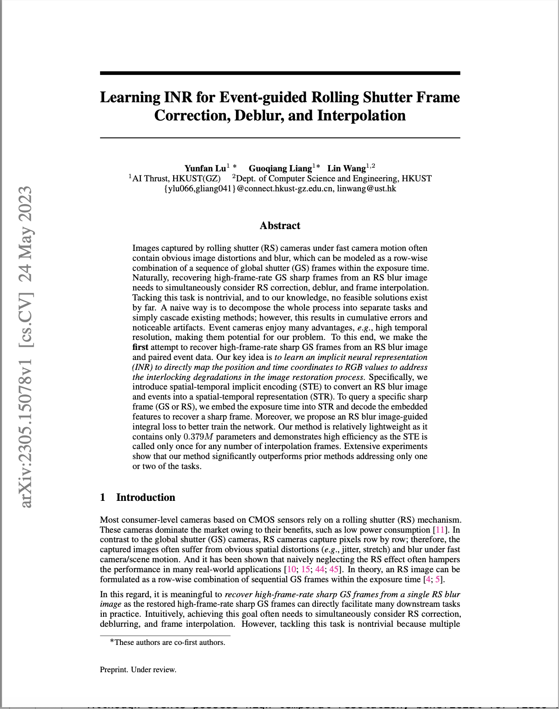
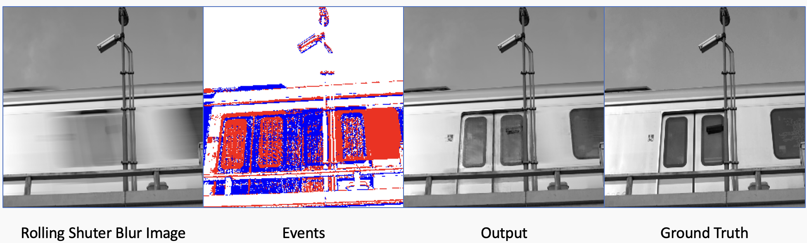
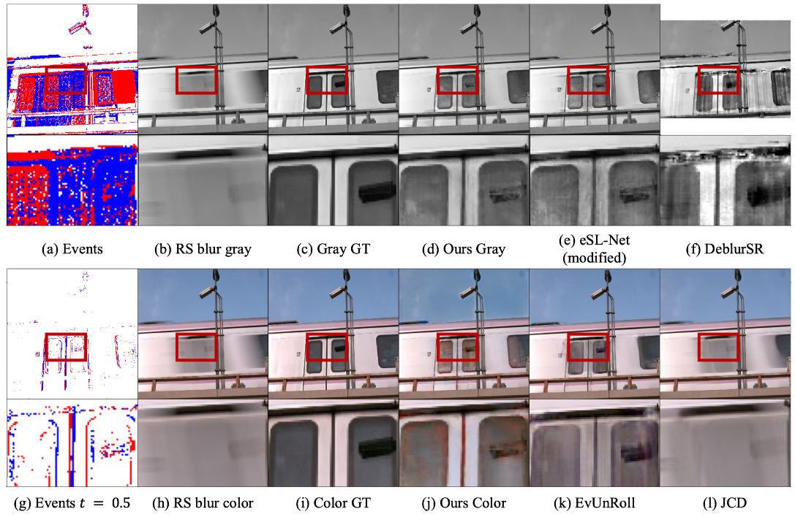
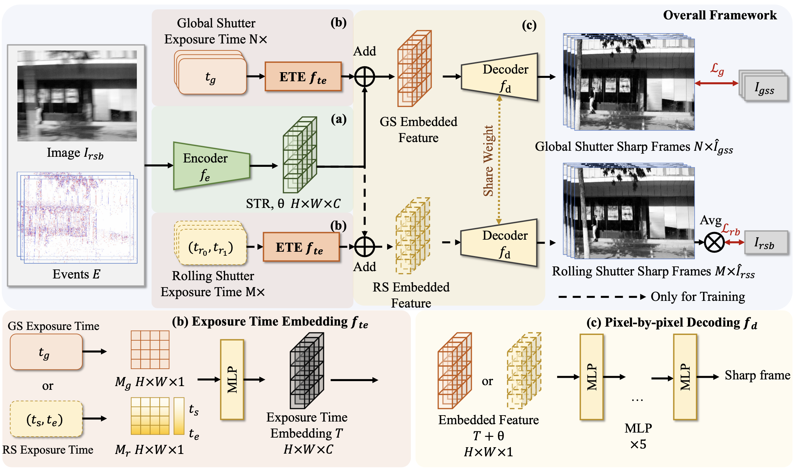

Learning INR for Event-guided Rolling Shutter Frame Correction, Deblur, and Interpolation
-
Yunfan Lu
AI Thrust, HKUST(GZ)
-
Guoqiang Liang
AI Thrust, HKUST(GZ)
-

Addison Lin Wang
AI Thrust, HKUST(GZ)
Dept. of CSE, HKUST
-

Paper
-

Video
-

Code
Abstract
Images captured by rolling shutter (RS) cameras under fast camera motion often contain obvious image distortions and blur, which can be modeled as a row-wise combination of a sequence of global shutter (GS) frames within the exposure time. Naturally, recovering high-frame-rate GS sharp frames from an RS blur image needs to simultaneously consider RS correction, deblur, and frame interpolation. Tacking this task is nontrivial, and to our knowledge, no feasible solutions exist by far. A naive way is to decompose the whole process into separate tasks and simply cascade existing methods; however, this results in cumulative errors and noticeable artifacts. Event cameras enjoy many advantages, e.g., high temporal resolution, making them potential for our problem. To this end, we make the first attempt to recover high-frame-rate sharp GS frames from an RS blur image and paired event data. Our key idea is to learn an implicit neural representation (INR) to directly map the position and time coordinates to RGB values to address the interlocking degradations in the image restoration process. Specifically, we introduce spatial-temporal implicit encoding (STE) to convert an RS blur image and events into a spatial-temporal representation (STR). To query a specific sharp frame (GS or RS), we embed the exposure time into STR and decode the embedded features to recover a sharp frame. Moreover, we propose an RS blur image-guided integral loss to better train the network. Our method is relatively lightweight as it contains only 0.379 M parameters and demonstrates high efficiency as the STE is called only once for any number of interpolation frames. Extensive experiments show that our method significantly outperforms prior methods addressing only one or two of the tasks.
Results on the Gev-RS dataset
Results of deblur and rolling shutter correction
Results of deblur, rolling shutter correction and video frame interpolation
Video Results of deblur, rolling shutter correction and video frame interpolation
Approach
An overview of our framework is depicted in the following figure, which takes an RS blur image and paired events as inputs and outputs N sharp GS frames with a high-frame-rate. To substantiate the defined functions f_e, f_te, and f_d, as mentioned in Sec.3.1, our proposed framework consists of three components: （1） Spatial-Temporal Implicit Encoding (STE), （2） Exposure Time Embedding (ETE), and （3） Pixel-by-pixel Decoding (PPD). Specifically, we first introduce an STE with deformable convolution to encode the RS blur frame and events into a spatial-temporal representation (STR) (Sec.3.2.1). To provide exposure temporal information for STR, we embed the exposure start timestamp of each pixel from the GS or RS by ETE. (Sec.3.2.2). Lastly, the PDD module adds ETE to STR to generate RS or GS sharp frames (Sec.3.2.3). We now describe these components in detail.
